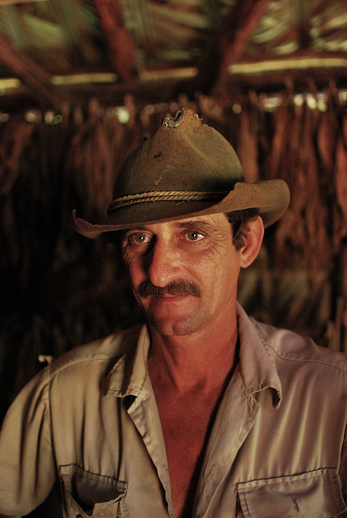
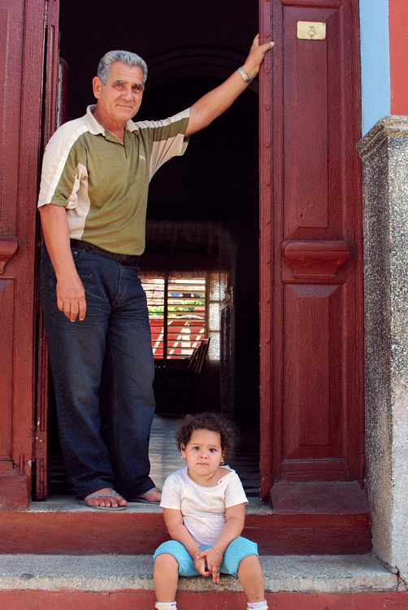
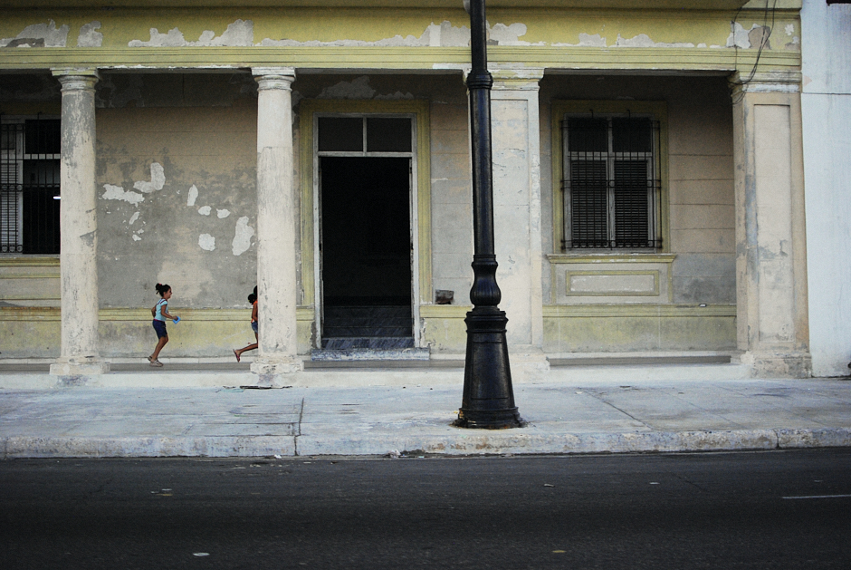

December 2012. I was lucky enough to visit Cuba, unique country of Central America. My journey started from Havana and moved on to Pinar del Rio; which is then followed by a road trip until reaching to southern coast, Trinidad..
Here you will find pictures from Havana streets through to the tobacco ranchers of Viñales Valley, portraits of Trinidad people through instantaneous shots of Havana streets..
"..our country is not just Cuba; our country is also humanity."
Fidel Castro
"..our country is not just Cuba; our country is also humanity."
Fidel Castro








